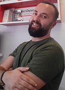

Urim Klisurica, i lindur me 1988 ne Mitrovice, Kosove.
Shkollen fillore dhe te mesme i kam kryer ne qytetin e lindjes, perkatesisht ne “Ismail Qemali” dhe gjimnazin “Frang Bardhi”. Jam po ashtu i diplomuar ne fakultetin juridik. Aktualisht kam nje biznes privat ne Mitrovice.
Teknologjine e kam pasur gjithmone pasion dhe kjo me ka bere qe te regjistrohem kete Bootcamp
Kontakti
Rr. Shala Nr. 51
Mitrovice, 40000
Republika e Kosoves
E-mail